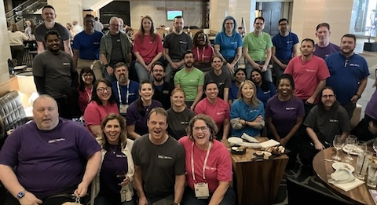

|

As we welcome the New Year, we’re thrilled to celebrate the A11y team's achievements in 2024! In addition to the launch of this newsletter, here are a few highlights:
- Global Accessibility Awareness Day (GAAD): Our GAAD event spanned three days, from May 14 to 16, and was held at six global corporate offices. It featured 13 virtual sessions and 9 onsite events, attracting close to 1500 participants. The keynote speaker was Joe Devon, founder of the GAAD Foundation.
- CSUN Assistive Technology Conference:Nearly 40 Hilton Team Members attended the conference, absorbing approximately 670 total hours focused on disability and accessibility training. The A11y team presented about their collaborative approach to building the accessible video player. Additionally, we’ve been selected to present again next year!
- Digital Compliance: As part of our overall automated compliance monitoring efforts, we are thrilled to report that we are ending the year with a compliance score of 91% for our One Hero Web and Curated platforms and increased our number of pages scanned by 32%. While our compliance scores fluctuate throughout the year as new features (e.g. Hilton for Business) and web content (e.g. SLH, Graduate, etc.) are released this represents an overall increase of 3% for all accessibility standards that can be tested using our enterprise automated scanning tool called AxeMonitor. Ending 2024, we added A11y Acceptance Criteria to over 690 user stories. 547 A11y bugs were opened and over 50% of those have been resolved.
- Comprehensive training: We delivered 2000+ hours of accessibility training. Connect with us for accessibility training like how to create accessible PowerPoints, emails, meetings and events and more. If you’re new, we also provide an introduction to accessibility.
|